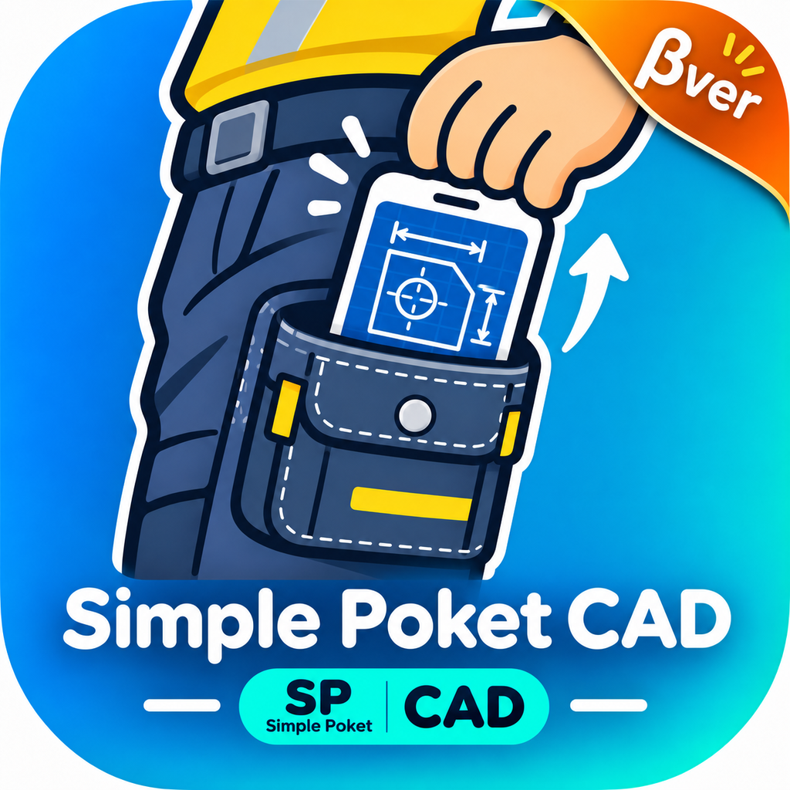

Simple Poket CAD
現場で手軽に使用できる シンプルな2D・3D CADアプリです。
アプリ概要
Simple Poket CADは、 土木・測量・現場作業などで 手軽に図面を作成することを目的として 開発しているCADアプリです。
スマートフォンで図面や座標を扱い、 いつでもどこでも手軽に CAD作業を行えることを目指しています。
主な機能
・2D CAD作図
・3D CAD表示
・座標入力
・測量計算
・図面保存
Simple Poket CAD PC版
現場でも事務所でも。測量・作図・現場計算を、これひとつで。
スマートフォン版の使い慣れたデザインを活かした、Windows PC・タブレット向けの2D・3D CADです。個人・法人を問わず、商用業務でも無料でご利用いただけます。
- 2D作図・3D表示・座標入力・測量計算
- SIMA・SFC・DXFの取り扱い、PDF関連機能
- マウス・タッチパッド・タッチ操作、縦横画面対応
Windows版 無料ダウンロード
- バージョン
- β1（初回公開版）
- 対応OS
- Windows 11（64ビット）
- CPU
- x64（Intel・AMD向け）／Windows 11 ARM64はx64互換機能を利用
- 動作確認
- Snapdragon搭載Surfaceでx64版の起動・基本機能を確認。全機種での動作を保証するものではありません。
- 利用料金
- 無料（個人・商用利用可）
- 配布形式
- ZIP（インストーラー不要）
ダウンロード前に、下記の利用条件とβ版の注意事項をご確認ください。
Windows版を無料ダウンロード ↓x64版・ZIP形式 ｜ 開発元 UG/CORPO
起動方法
- ダウンロードしたZIPを右クリックして「すべて展開」。
- 展開したフォルダー内の
spcad_windows.exeを起動します。 - EXE・DLL・dataフォルダーは同じ構成のまま保管してください。
通常の起動にVS CodeやFlutterなどの開発環境は不要です。ランタイム不足の場合は Microsoft公式のVisual C++再頒布可能パッケージ（x64） をご確認ください。電子署名がないため、発行元不明の警告が表示される場合があります。不審なファイルは実行しないでください。
利用条件
個人利用・商用利用ともに無料です。 自分で作成した図面・成果物は自由にご利用いただけます。
独自部分の無断再配布・転載・販売や改変版の無断配布は禁止します。自己利用のための複製・バックアップは可能です。第三者ライブラリにはそれぞれのライセンスが適用され、そこで認められる権利を制限しません。
ソースコードは非公開です。ソフトの紹介には公式ページのURLをご利用ください。
Copyright © 2026 UG/CORPO（独自部分）
β版の注意事項・不具合報告
本ソフトはβ版です。重要な図面・座標は必ずバックアップし、距離・面積・測量計算などの結果は別の方法でも確認してから実務に使用してください。
不具合はOS・CPU・操作手順・エラー内容を添えて UG/CORPOへメール でお知らせください。機密図面や個人情報は送信しないようお願いします。
更新履歴
β1：Windows向け初回公開版。スマートフォン版をベースに縦横画面およびPC操作へ対応。
Android版 無料ダウンロード・β版テスター募集
Simple Poket CADは、Google Playで無料のクローズドテストを実施しています。 テストへの参加は、次の順番で行ってください。
-
① Googleグループに参加
まず「Simple-Pocket-CAD-beta-testers」グループに加入します。 Google Playで使うGoogleアカウントを選んでください。
① Googleグループに参加する ↗ -
② Google Playでテスター登録
グループに参加したのと同じGoogleアカウントで開き、 「テスターになる（Become a tester）」を押してください。
② テスター登録をする ↗ -
③ Google Playで無料インストール
テスター登録が完了したら、同じGoogleアカウントで Google Playストアを開き、アプリをインストールしてください。
③ Google Playでインストール ↗
※ グループへの加入だけではテスター登録は完了しません。 また、Google Playで「アプリを利用できません」と表示される場合は、 グループへの加入状況、Googleアカウント、テスト版の公開状況を確認してください。
※ β版のため動作が不安定な場合があります。 不具合やご意見はUG/CORPOまでお知らせください。
プライバシーポリシー
Simple Poket CADの プライバシーポリシーはこちらから確認できます。
プライバシーポリシーを見る← UG/CORPOトップへ戻る